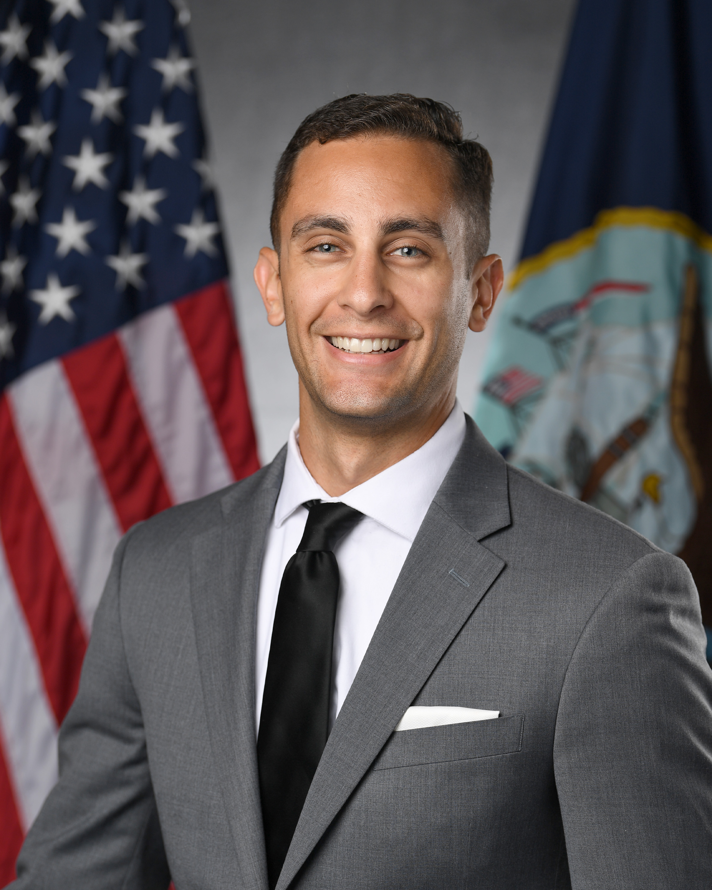

Driving digital transformation, software development, and growth initiatives for The United States of America.

I grew up in a quiet suburb of Northern New Jersey in a house filled with technology. My father was a programmer, so I was blessed (or cursed) with computers at a very young age. I started programming when I was 15 because of my love for video games—I wanted to develop my own. Realizing that this isn't the most lucrative or rewarding career path, I traditionally pursued a degree in Computer Science at Florida Atlantic University.
After completing my undergraduate degree at Florida Atlantic University, I joined the US Navy's civilian workforce, helping to build their DevSecOps initiative. After a couple years of hardwork and massive under payment, I left to work at Booz Allen Hamilton doing the exact same thing for 50% more (technical Gov employees are underpaid). I got a call from my old PM at the Navy to come back and lead their DevSecOps and Cloud programs and I think that was one of the best decisions I made. I was able to build a team of some of the best DevSecOps engineers in the country and we were able to deliver some of the most innovative solutions to the Navy. While leading and guiding great teams I continued my scholastic pursuits and received my Masters in Software Engineering from George Mason University. Then the Fork in the Road came (if you know, you know), and I left the Navy to come back to the private sector and GovCon as The Navy CTO for LMI Solutions.
I am currently pursuing a career in the private sector as a GovCon Tech Leader specializing in digital transformation, software development, and growth initiatives.
Finished coursework and mastery at George Mason University, focusing on advanced software engineering principles.
View ProgramTake a look at what I'm playing around with and Vibe Coding. I like to say "Vibe Architecting"!
View Code